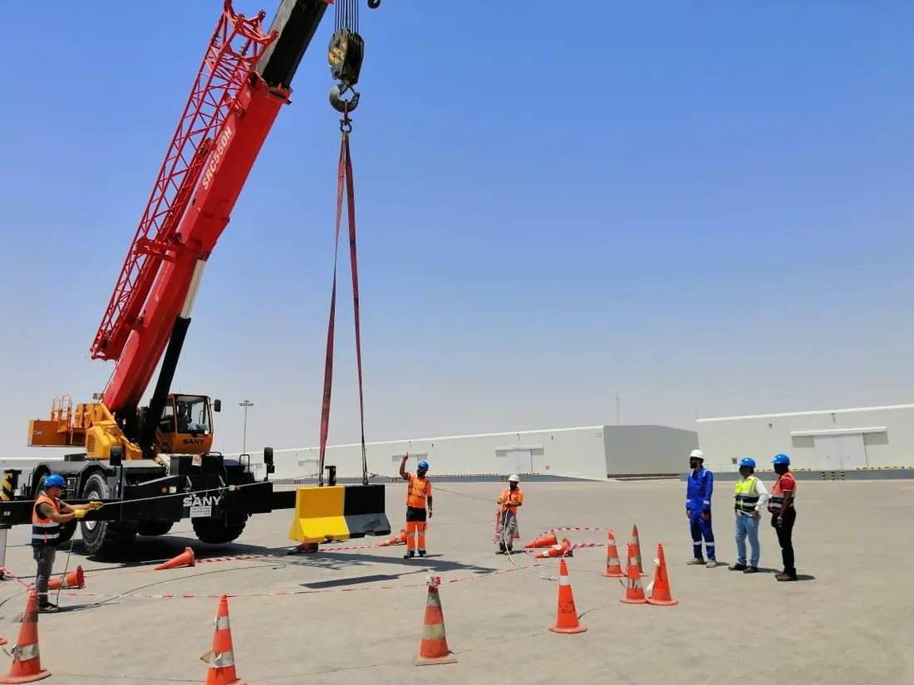
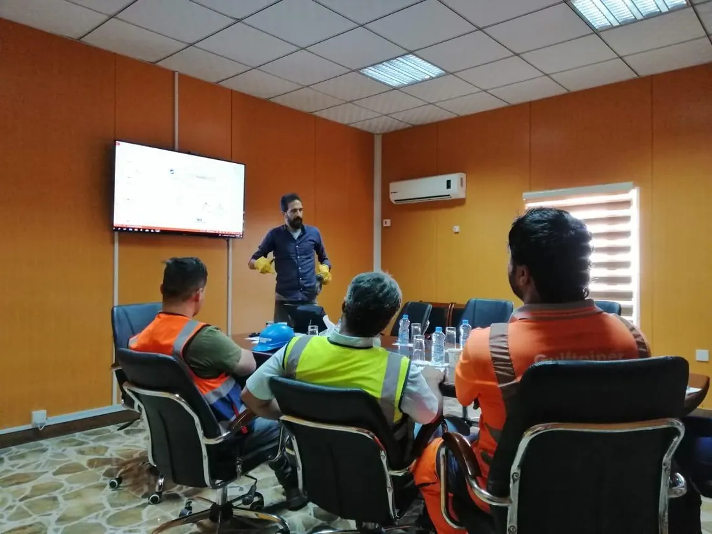
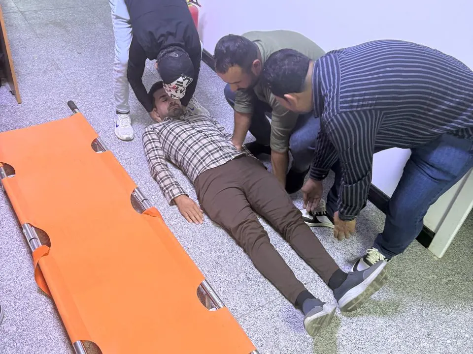
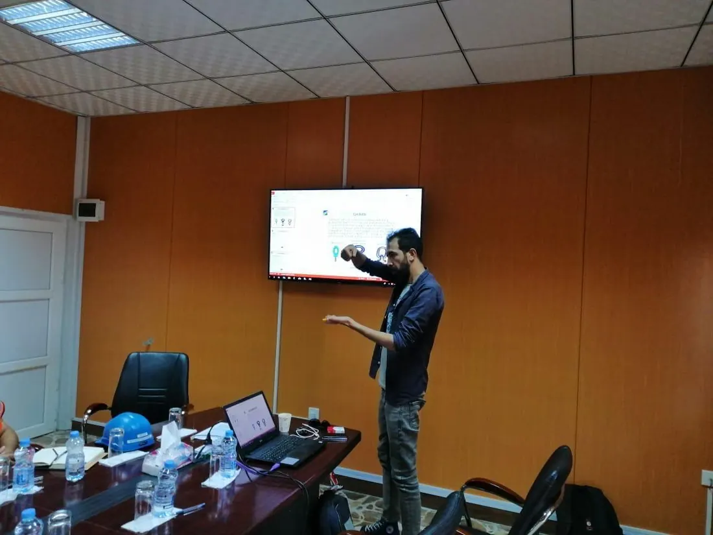
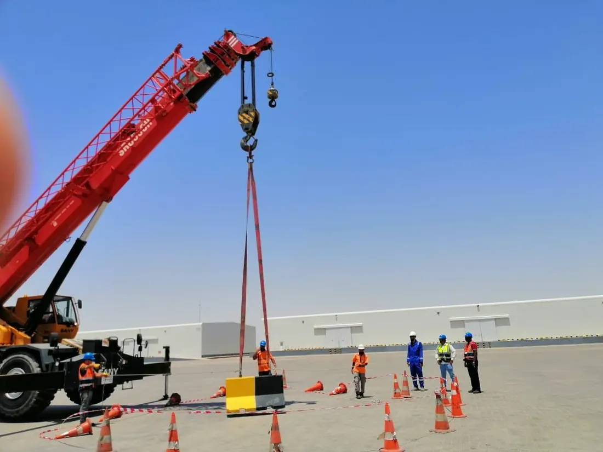
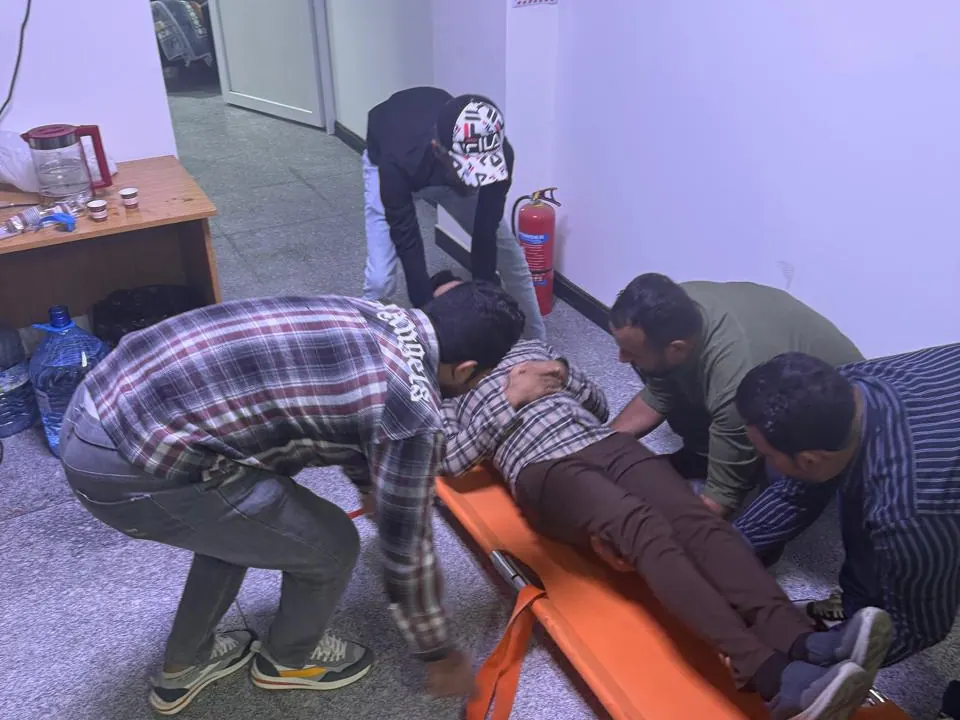
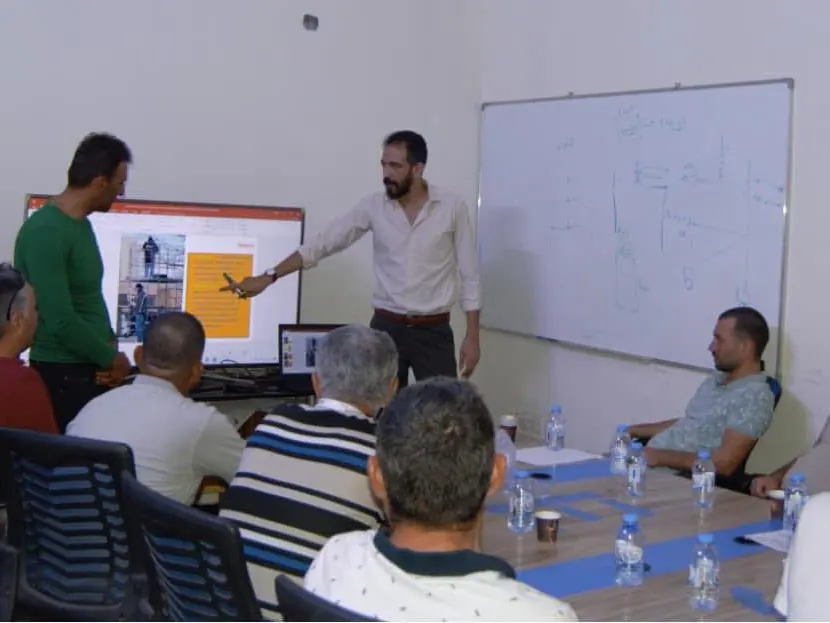
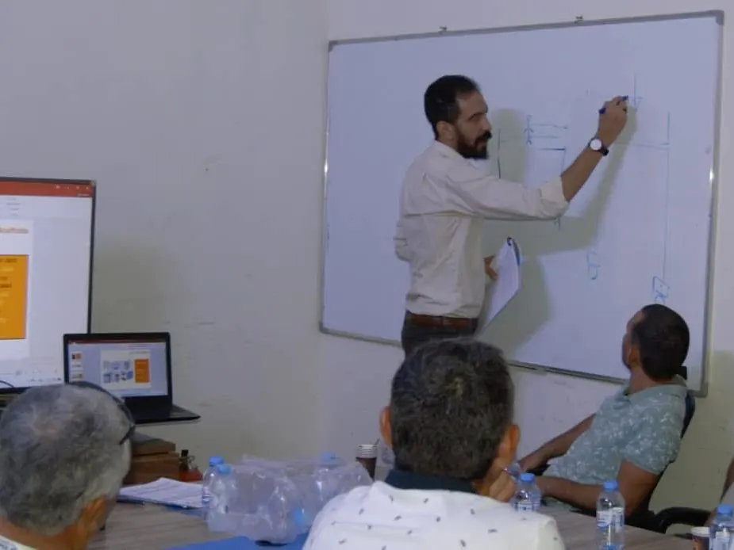

LC-01
الشخص المسؤول عن عمليات الرفع (LOLER Appointed Person)
الرفعاستفسر
تطوير المهارات. تعزيز السلامة. بناء الكفاءة.
تقدم أكاديمية CEETA مجموعة متنوعة من الدورات التدريبية الفنية ودورات السلامة، المصممة لتطوير المهارات المهنية وتعزيز الوعي بممارسات العمل الآمن. تشمل برامجنا التدريبية عمليات الرفع، وتشغيل المعدات، والسلامة المهنية.
تخطيط عمليات الرفع والإشراف عليها وتنفيذها بأمان.
تشغيل آمن وكفء للرافعات ومنصات الرفع والمعدات.
السلامة المهنية والتحكم في المخاطر والاستجابة للطوارئ.
تخطيط عمليات الرفع والإشراف عليها وتنفيذها بأمان.
تشغيل آمن وكفء للرافعات ومنصات الرفع والمعدات.
السلامة المهنية والتحكم في المخاطر والاستجابة للطوارئ.
لا توجد دورات مطابقة لبحثك.
الجانب النظري داخل القاعات والتطبيق العملي في المواقع — من أعمال الربط والرفع حتى الإسعافات الأولية.










هل تبحث عن خدمات موثوقة في الفحص الفني أو الهندسة أو التدريب؟ فريقنا مستعد لاستقبال استفساراتكم ومناقشة متطلباتكم.